01
Light
Golden Hour Walk · Natural Tone
Chase golden hour. Command sunsets and backlight with natural tone.
Sixty hands-on workshops, led by professional photographers. Pre-order the Find X10 Series and step into an OPPO Masterclass built to unlock every ounce of its flagship imaging.
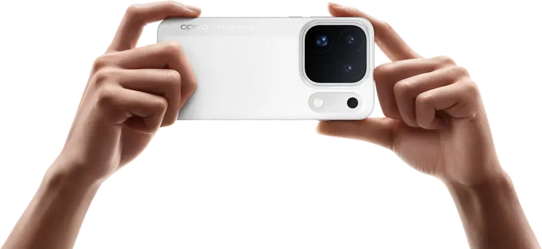
Each theme unlocks one flagship capability of the Find X10 Series, taught on location by professional photographers.
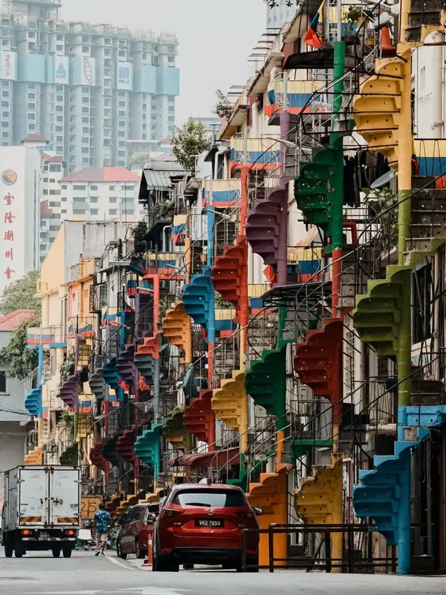
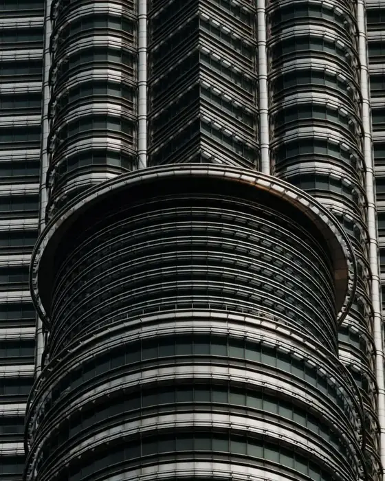
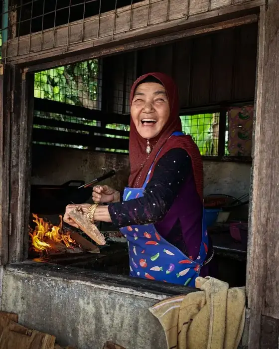
Pick a theme, meet the speakers and register. Every masterclass is **FREE** to join, with more sessions announced soon.
Seven masterclasses chase the light across Malaysia, from golden hour into night.
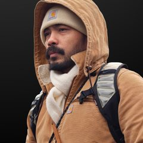
The 0.5x ultra wide at 200MP, used properly. How to get close enough that a wide frame still has a person in it, and how all those pixels hold the colour of a sunset instead of smearing it.
Getting a film look out of the Find X10 on a working waterfront, sunset into night. The trick is knowing where to push and where to leave alone, so it still feels like the evening you were actually standing in.
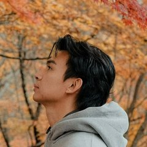
Seven hours on one island, chasing the light as it moves. Hard shadow at midday, long shadow at golden hour, almost none at dusk. Reading where the shadow falls, then putting someone in it.
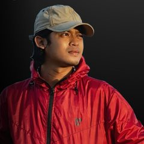
The same bridge and the same water, shot from your knees and then from up on the span. How camera height changes what a place means, and why most people only ever shoot from eye level.
Portraits as the light runs out. Golden hour, blue hour, then the cafe's own lamps. Keeping skin looking like skin the whole way down.
Catching movement as the light drops. A model walking, water, cloth, and the frame where it all means something. Freezing or blurring, and knowing which one the moment is asking for.
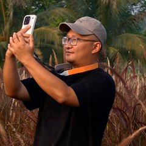
Shutter drag and slow shutter after the sun has gone. Holding a phone steady enough, dragging the shutter so the light moves but your subject does not, and keeping the colour honest while you do it.
Seven masterclasses get close, from carved timber and market faces to the texture of a facade at golden hour.
Starts inside the mall, moves out into Alor Setar as the light turns. Lines, repetition, surface, and using the street itself as a frame. Ends in golden hour, when side light pulls texture out of a facade that looked flat all day.
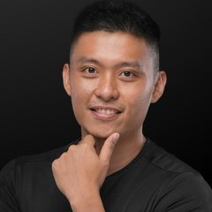
The architecture here does half the work for you. Curves, repetition, light coming through the structure, and detail worth building a frame around. Finding the frame inside the scene, using foreground and line to lead the eye, and changing the picture by moving yourself instead of changing the settings.
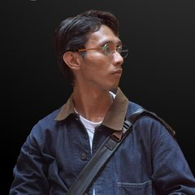
Masjid India is crowded and messy, and the picture is the human moment inside it. A trader at work, a gesture, an exchange between two people. Getting close without killing the moment, and picking the one detail that carries it.
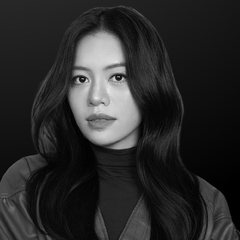
Detail as evidence of a life. Faces, hands, tools, worn surfaces, the marks that record use. How to approach a stranger and earn a few minutes, and how one close detail can carry a story a wide shot would only describe.
An open beach in late afternoon is harsh and high contrast, and detail is the first thing people lose. Exposing so water, sand and sky all keep texture, reading the light as it softens into dusk, then editing so the detail survives.
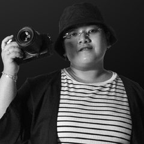
Indoors, with Halloween makeup as the subject. Shooting close enough that the texture of the makeup holds, paint, powder, glitter, the edge where it meets skin. Lighting a face so the detail reads instead of flattening out, and keeping the colours true to what is actually there.
Shoot the full 200MP, then crop in hard and find the picture inside the picture. Carved timber and ornament to work on, and holding fine detail as the light fades into the evening.
Eight masterclasses read colour in the wild, from festival streets and garden greens to shop lights at dusk.
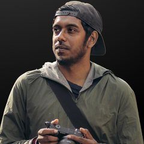
Little India is busy with Deepavali eve shopping in soft morning light. Learn to expose so bright reds and golds hold, and keep every skin tone true with Natural Tone.
Hasselblad colour and LUMO True Color Imaging get colour right in camera. Learn to shoot people and places that look finished straight out of the phone, and when an edit actually helps.
The garden’s trees and hedges bounce green light onto faces. Learn to spot it, reposition the subject and keep skin true with Natural Tone.
Pasar Seni’s lanes are packed with colour and people on the eve of Deepavali. Learn to shoot candidly from a distance with the telephoto lens, isolating one patch of colour and one person.
Every corner of Pasar Seni has its own dominant colour. Learn to work close, use doorways and walls to frame one colour, and set the LUMO Color Palette before shooting.
Water, greenery and sky each pull colour a different way as the afternoon warms. Learn to set one look with the LUMO Color Palette and carry it across a landscape, a person in it and a portrait.
As daylight fades, shop and street lights take over and every source pulls colour a different way. Learn to read each light, place the subject where skin stays true, and set the LUMO Color Palette to match.
The session moves between covered India Street and the open Padang Merdeka. Learn to match background colour to clothes and makeup, and see how skin reads in shade versus hard sun.
Seven masterclasses tell the story of a person, from natural light and portrait mode to cinematic mood.
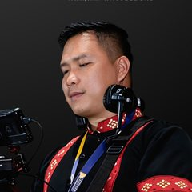
Explore the beauty of capturing authentic expressions, unique personalities, and intricate details through the lens. See wildlife differently and discover the beauty in every detail, and tell a story through every portrait.
Most people tap portrait mode and hope for the best. Learn to choose the right focal length, set the blur and exposure yourself, and get a portrait that looks natural instead of cut out.
A good portrait comes from the right light, a relaxed subject and a natural expression. Learn where to place your subject, how to direct them simply, and how to capture a portrait that feels true to the person.
A blurred background is where most portraits stop. Learn to break the usual formula with unexpected angles, reflections, framing and props, and create portraits with a style that is your own.
A cinematic portrait feels like a still from a film, with mood, story and a subject caught mid moment. Learn to use light, framing and colour tone to build that look in camera while keeping the person true to who they are.
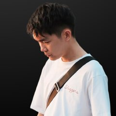
Explore creative colour tones, artistic perspectives, and unique angles of sight to capture more stunning model photography and portraits.
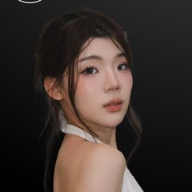
Good portraits start with finding the right light. Learn to spot soft, flattering light, place your subject in it, and keep skin tones and mood true to the moment.
Seven masterclasses reach further, from distant landscapes and wildlife to people caught at the peak of the moment.
Some subjects are too far, too busy or too shy to walk up to. Learn to use zoom to isolate what matters, keep the frame clean, and capture natural moments from a distance without disturbing the scene.
Go beyond the wide shot. Learn to use zoom and different focal lengths to bring distant scenery closer, highlight hidden details, and create stronger landscape compositions.
Zoom lets you choose exactly what goes into the story and what stays out. Learn to pair a mural with a passerby, frame small moments from across the street, and build a series of shots that tells one story.
From a bird on a branch to a boat on the river, zoom brings distant subjects into a clean, simple frame. Learn to spot what is worth reaching for, compose it with intent, and keep detail sharp at a distance.
From high ground, zoom pulls distant hills, sea and sky closer together into layers. Learn to compress a wide view into a tighter, stronger frame, and place a person in it to give the scene scale.
Zoom lets you capture people in action without stepping into the scene. Learn to anticipate movement, track your subject from a distance and press the shutter at the peak of the moment.
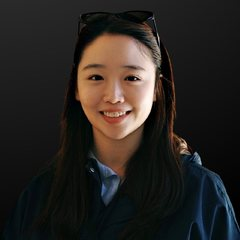
Sometimes, the best way to capture a moment is to get closer without being seen. Zoom allows us to observe quietly, anticipate the moment, and preserve it just as it happens.
Take what you learn in class and share it. Post your finest frames on Instagram and TikTok with the campaign hashtags, and the top 15 creators with the highest engagement fly to Sabah.
How to join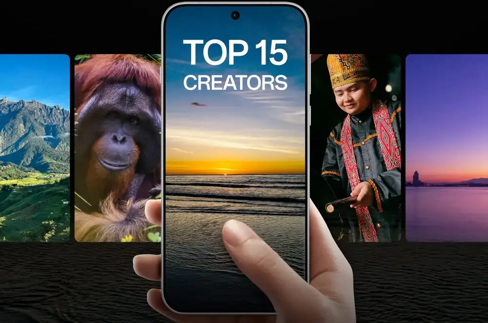
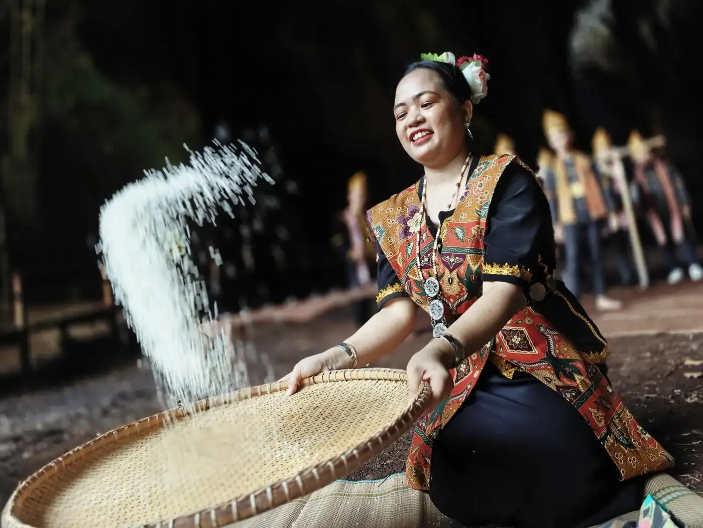
Three days across Sabah’s wild horizons, reserved exclusively for the 15 creators who drive the highest engagement.
OPPO Malaysia reserves the right of final decision and may adjust the itinerary or participant lineup due to weather, scheduling, or unforeseen circumstances.
Shoot the real Malaysia with the masters, through the OPPO Find X10 Series Hasselblad True-to-Life Camera.
Get NowThere are two ways to join:
No. OPPO Masterclass is FREE to join. Both the Privilege Pass and the Taster Pass are complimentary.
Yes. You can choose from the six themes: Light, Detail, Colour, Portrait, Zoom and Create. You can pick any six sessions freely, including repeating the same theme, subject to availability.
Class size depends on the venue and is first come, first served.
Yes. Privilege holders can bring one friend to every session. Taster Pass holders can't.
No. With the Taster Pass, you can join 2 classes FREE without owning one. We will lend you a sharing device to experience. The full Privilege Pass is for those who pre-ordered the Find X10 Series.
Tap Register Here on the class you want in the Schedule section. Registration is free. More session dates, times and venues will be announced on OPPO's official social media.
Yes, as long as you meet the requirements:
The top 15 participants with the highest engagement on Instagram and TikTok win. OPPO's decision is final.
The trip is scheduled to take place from 18 to 20 December 2026. OPPO Malaysia reserves the right of final decision and may adjust the itinerary or participant lineup due to weather, scheduling, or unforeseen circumstances.
Until 31 Dec 2026.